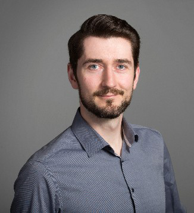
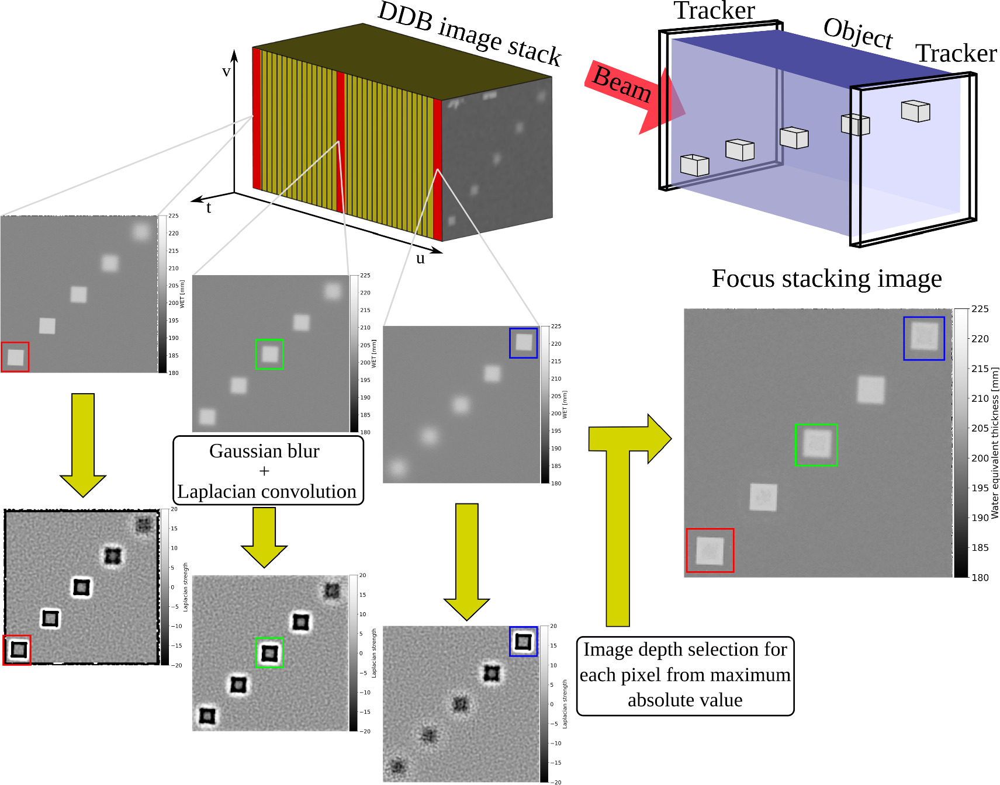

Lennart Volz
Hi! I'm Lennart Volz, scientist and Deputy Group Leader of Medical Physics at GSI Helmholtzzentrum für Schwerionenforschung, developing next-generation solutions for advanced radiotherapy cancer care. My current research focuses on improving particle therapy, specifically through:
- upright and gantry-less radiotherapy
- particle arc therapy with protons, helium and carbon ions
- ion imaging and real-time image guidance
- AI-enabled workflows for particle therapy
I received my Dr. rer. nat. with summa cum laude from Heidelberg University and DKFZ in 2020, following my M.Sc. and B.Sc. in Physics at Heidelberg University. I co-chair the PTCOG AI Subcommittee and the Upright Research Consortium. In my free time, I enjoy sports (bouldering, mountain biking, running, skiing/snowboarding), music (guitar), and spending time with my family.
Email Scholar LinkedIn ORCID GitLab GitHub
Projects
- DoseRAD 2026. Co-organizer of the doseRAD grand challenge for proton and photon dose calculation on CT and MRI.
- C-DoTA. PhD project by A. Quarz @TU Darmstadt, developing a transformer model to predict physical and biological radiation dose in carbon ion therapy. DOI
- Dose prediction, CAM-HD-Unet based dose prediction models for carbon ion therapy treatment planning enhancement, B.Sc. thesis, M. Philipi @ TU Darmstadt
- Reinforcement learning for energy selection in carbon ion arc therapy, M. Sc. thesis A. El-Beit @ TU Darmstadt
- Regression models to infer the carbon ion beam range from a mixed helium-carbon ion beam, PhD thesis M. Dick @ TU Darmstadt
Leadership
- Deputy head of GSI's medical physics group, mentor of more than 15 undergraduate and graduate students, including 2 award winning PhD projects.
- Co-leading the UPLIFT doctoral network with >5M Euro funding across 15 partner institutions (19 PhD students)
- Leading HI-Acts Use Case Initiative UPROTATE with the aim of commercializing an upright ion arc system
- Leading "LIGHT: lung tumor ion fluoroscopy guided heavy ion therapy", funded by Forschungsförderung der Philips Universität Marburg <>
Recent Publications
- For a full list of papers, please visit my Google Scholar.
-

Mixed Ion Beams Enable Simultaneous Treatment and Real-Time Imaging in Carbon Ion Therapy
Lennart Volz, et al.
arXiv:2603.12975, 2026; in review with Nature Physics
-

DoseRAD2026 Challenge dataset: AI accelerated photon and proton dose calculation for radiotherapy
Fan Xiao, et al.
arxiv:2604.12778, 2026; in review with Medical Physics
-

An Artificial Intelligence Dose Engine for Fast Carbon Ion Treatment Planning
A. Quarz, et al.
International Journal of Particle Therapy, 2026
-

HyperSHArc: Single-Isocenter Stereotactic Radiosurgery of Multiple Brain Metastases Using Proton, Helium, and Carbon Ion Arc Therapy
Lennart Volz, et al.
Advanced Radiation Oncology, 2025
-

Opportunities and Challenges of Upright Patient Positioning in Radiotherapy
Lennart Volz, et al.
Physics in Medicine & Biology, 2024
-

-

Experimental Exploration of a Mixed Helium/Carbon Beam for Online Treatment Monitoring in Carbon Ion Beam Therapy
Lennart Volz, et al.
Physics in Medicine & Biology, 2020; Physics World Top Ten Breakthrough of 2020
Selected Talks
- 2025 AAPM Annual Meeting — Invited speaker on upright patient positioning
- 2025 PTCOG63 — Invited speaker on particle arcs; session chair for AI in particle therapy
- 2024 ESTRO Annual Meeting — Invited speaker on challenges of upright patient positioning
- 2024 ESTRO Physics Workshop — Co-chair, gantry-less radiotherapy
Awards
- 2023 Otto-Haxel Award for Physics
- 2023 AAPM Scientific Council Recognition for innovations in medical physics
- 2021 Deutscher Studienpreis, finalist
- 2021 Wilhelm and Else Heraeus Award
- 2020 Physics World Top Ten Breakthrough in Physics
- 2017 Christoph Schmelzer Award
Professional experience
- Since 2024 Deputy Group Leader Medical Physics, staff scientist, GSI Helmholtzzentrum for Heavy Ion Research GmbH, Darmstadt, Germany
- 2021-2024 PostDoc, GSI Helmholtzzentrum for Heavy Ion Research GmbH, Darmstadt, Germany
- 2021-2023 Remote visiting researcher in the group of Dr. Collins-Fekete, UCL, London, UK
- 2020-2021 PostDoc, DKFZ, Heidelberg, Germany
- 2017-2020 PhD student, DKFZ, Heidelberg
- 2016 Research assistant, Massachusetts General Hospital and Harvard Medical School, Boston, USA
Education
- 2020 Dr. rer. nat. Physics, Heidelberg University
- 2017 M.Sc. Physics, Heidelberg University, M.Sc. thesis at DKFZ
- 2015 B.Sc. Physics, Heidelberg University
Technical expertise
- Scientific programming: Python, C, C++, LabVIEW
- Deep learning: Torch, TensorFlow
- Computing: HPC (Slurm, PBS, LSF), bash/Linux, docker, apptainer
- CAD: FreeCAD, UltiMaker, 3D-printing